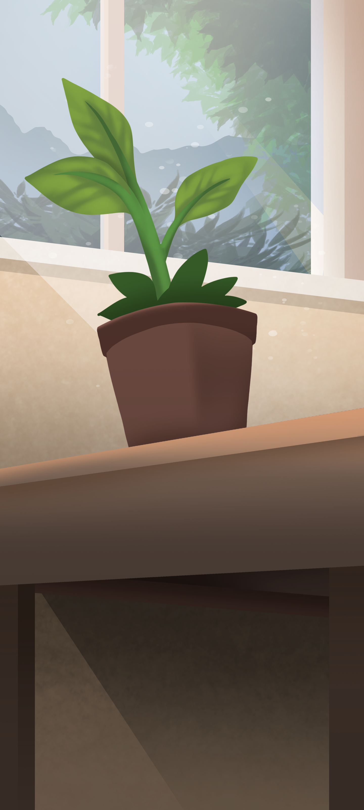
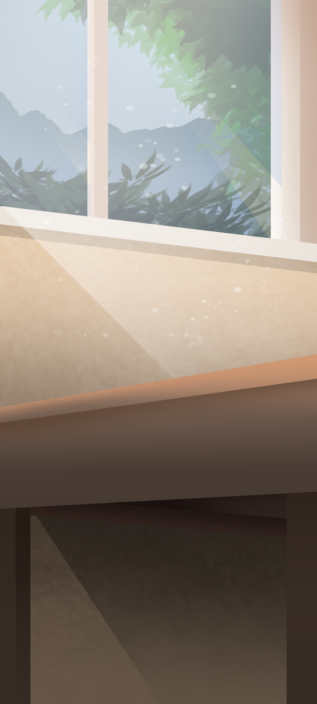

<ion-header [translucent]="true">
  <ion-toolbar>
    <ion-title> How much did you drink today? </ion-title>
  </ion-toolbar>
</ion-header>

<ion-content [fullscreen]="true">
  <ion-card>
    <!--Put stuff here-->
    <body style="background-color: blue">
      
    </body>

    <ion-input placeholder="Enter Username"></ion-input>
    

    <ion-list style="margin-top: 82%; margin-left: 10px">
      <ion-radio-group value="biff">
        <ion-list-header>
          <ion-label>Sex</ion-label>
        </ion-list-header>

        <ion-item>
          <ion-label>Male</ion-label>
          <ion-radio slot="start" value="male"></ion-radio>
        </ion-item>

        <ion-item>
          <ion-label>Female</ion-label>
          <ion-radio slot="start" value="female"></ion-radio>
        </ion-item>
      </ion-radio-group>
    </ion-list>

    <ion-item style="margin-left: 10px">
      <ion-thumbnail>
        
      </ion-thumbnail>
      <ion-range min="0" max="20" step="1" pin="true" snaps="true">
        <ion-label slot="start">0 Cups</ion-label>
        <ion-label slot="end">20 Cups</ion-label>
      </ion-range>
    </ion-item>

    <ion-button expand="full" id="inputButton">Input Water</ion-button>

    <!--
    female bad=1-5 good= 6-8 best=9-11cups
    male bad=1-8 good= 8-12 best=13-15cups
  -->
  </ion-card>

  <ion-header collapse="condense">
    <!-- <ion-toolbar>
      <ion-title size="large">Tab 1</ion-title>
      
    </ion-toolbar> -->
  </ion-header>

  <!-- <ion-list>
    <ion-item *ngFor="let item of items">
      <ion-thumbnail slot="start">
        <ion-img [src]="../assets/img/waterbottle.jpg"></ion-img>
      </ion-thumbnail>
      
    </ion-item>
  </ion-list> -->
</ion-content>
